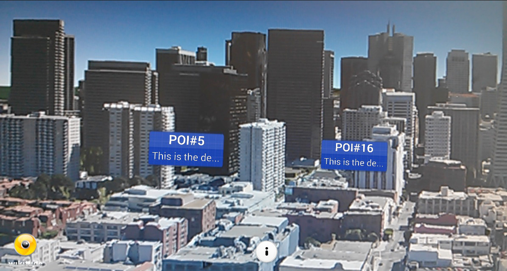
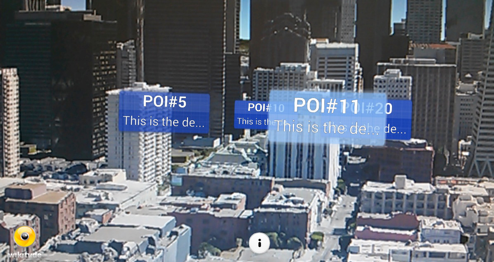

Point Of Interest (POI)
The Point Of Interest (POI) example series will show how you can create a marker that is placed at a specific geolocation. The example is split into four different parts that depend on each other. You will have a complete and reusable marker at the end of the series which has a title, description, a selected and an idle state which animates smoothly from one to another.
This sample consists of four parts
POI at Location (1/4)
The first part of the series will present an image at a geolocation. To do so, we will use the AR.context.onLocationChanged() callback to get the current location. After the location has been retrieved, we will use it to place an AR.ImageDrawable there.
All JavaScript code can be found in the file poiatlocation.js.
The example Image Recognition already explained how images are loaded and displayed in the augmented reality view. This sample loads an AR.ImageResource when the World variable was defined. It will be reused for each marker that we will create afterwards.
The last line of the poiatlocation.js shows how to set a custom AR.context.onLocationChanged callback.
AR.context.onLocationChanged = World.onLocationChanged;The custom function World.onLocationChanged checks with the flag World.initiallyLoadedData if the function was already called. There is also a possibility to set AR.context.onLocationChanged to null. In this case the function will not be called anymore and no further location updates will be received.
On the first call of World.onLocationChanged an object that contains geo information will be created which will be later used to create a marker using the World.loadPoisFromJsonData function.
locationChanged: function locationChangedFn(lat, lon, alt, acc) {
// request data if not already present
if (!World.initiallyLoadedData) {
var poiData = {
"id": 1,
"longitude": (lon + (Math.random() / 5 - 0.1)),
"latitude": (lat + (Math.random() / 5 - 0.1)),
"altitude": 100.0
};
World.loadPoisFromJsonData(poiData);
World.initiallyLoadedData = true;
}
}The loadPoisFromJsonData function creates an AR.ImageResource which is later used as an image for the marker.
// start loading marker assets
World.markerDrawable_idle = new AR.ImageResource("assets/marker_idle.png");For creating the marker a new object AR.GeoObject will be created at the specified geolocation. An AR.GeoObject connects one or more AR.GeoLocations with multiple AR.Drawables. The AR.Drawables can be defined for multiple targets. A target can be the camera, the radar or a direction indicator. Both the radar and direction indicators will be covered in more detail in later examples.
// create the marker
var markerLocation = new AR.GeoLocation(poiData.latitude, poiData.longitude, poiData.altitude);
var markerImageDrawable_idle = new AR.ImageDrawable(markerDrawable_idle, 2.5, {
zOrder: 0,
opacity: 1.0
});
// create GeoObject
var markerObject = new AR.GeoObject(markerLocation, {
drawables: {
cam: [markerImageDrawable_idle]
}
});Finally the status message is updated as a user feedback that everything was loaded properly:
World.updateStatusMessage('1 place loaded');POI with Label (2/4)
The second part adds a title and description label to our marker object and covers more drawable related options.

All JavaScript changes are in poiwithlabel.js. Note that the file is only renamed but its content is mostly identical to poiatlocation.js.
The locationChanged function adds a description and a title to the marker:
var poiData = {
"id": 1,
"longitude": (lon + (Math.random() / 5 - 0.1)),
"latitude": (lat + (Math.random() / 5 - 0.1)),
"altitude": 100.0,
"description": "This is the description of POI#1",
"title": "POI#1"
};Marker class (see marker.js). Parts of the code are moved from loadPoisFromJsonData to the Markerclass: the creation of the AR.GeoLocation, the creation of the AR.ImageDrawable and the creation of the AR.GeoObject. Then instantiate the Marker in the function loadPoisFromJsonData:
js
// create the marker
var marker = new Marker(poiData);
There are two major points that need to be considered while drawing multiple AR.Drawables at the same location. It has to be defined which one is before or behind another drawable (rendering order) and if they need a location offset. For both scenarios, ARchitect has some functionality to adjust the drawable behavior.
To position the AR.Label in front of the background, the background drawable(AR.ImageDrawable2D) receives a zOrder of 0. Both labels have a zOrder of 1. This way it is guaranteed that the labels will be drawn in front of the background drawable.
Assuming both labels will be drawn on the same geolocation connected with the same AR.GeoObject they will overlap. To adjust their position change the offsetX and offsetY property of an AR.Drawable2D object. The unit for offsets are SDUs. See this chapter for more information about SDUs.
In the following both AR.Labels are initialized and positioned. Note that they are added to the cam property of the AR.GeoObject the same way as an AR.ImageDrawable.
function Marker(poiData) {
this.poiData = poiData;
var markerLocation = new AR.GeoLocation(poiData.latitude, poiData.longitude, poiData.altitude);
this.markerDrawable_idle = new AR.ImageDrawable(World.markerDrawable_idle, 2.5, {
zOrder: 0,
opacity: 1.0
});
this.titleLabel = new AR.Label(poiData.title.trunc(10), 1, {
zOrder: 1,
offsetY: 0.55,
style: {
textColor: '#FFFFFF',
fontStyle: AR.CONST.FONT_STYLE.BOLD
}
});
this.descriptionLabel = new AR.Label(poiData.description.trunc(15), 0.8, {
zOrder: 1,
offsetY: -0.55,
style: {
textColor: '#FFFFFF'
}
});
// Changed:
this.markerObject = new AR.GeoObject(markerLocation, {
drawables: {
cam: [this.markerDrawable_idle, this.titleLabel, this.descriptionLabel]
}
});
return this;
}Additionally a function which truncates a text string that is longer than the given length is added. This function is used to shorten titles or descriptions.
String.prototype.trunc = function(n) {
return this.substr(0, n - 1) + (this.length > n ? '...' : '');
};Multiple POIs (3/4)
The third example consist of two parts. The first part shows how to create multiple markers and in the second part an implementation of a marker selection is described.

For creating multiple markers change the class World. Add a function requestDataFromLocal with the geo information as parameters (latitude, longitude) which are used for creating different poi data to a random location in the user's vicinity. The new function is called from locationChanged instead of calling loadPoisFromJsonData like in the previous example:
World.requestDataFromLocal(lat, lon);The function loadPoisFromJsonData will be called within the new function requestDataFromLocal after the POI data was created:
// request POI data
requestDataFromLocal: function requestDataFromLocalFn(centerPointLatitude, centerPointLongitude) {
var poisToCreate = 20;
var poiData = [];
for (var i = 0; i < poisToCreate; i++) {
poiData.push({
"id": (i + 1),
"longitude": (centerPointLongitude + (Math.random() / 5 - 0.1)),
"latitude": (centerPointLatitude + (Math.random() / 5 - 0.1)),
"description": ("This is the description of POI#" + (i + 1)),
"altitude": "100.0",
"name": ("POI#" + (i + 1))
});
}
World.loadPoisFromJsonData(poiData);
}Since the argument of loadPoisFromJsonData is used as an array and not like a single object as before some adaptations are necessary. The POI information array which is delivered as an argument in the function loadPoisFromJsonData is used to create poiData objects. In a for loop iterate through all the poi information objects. For each object create a new object singlePoi. To create multiple markers new Marker(poiData) can be called multiple times with different locations, titles and descriptions as defined in the poiData object. Now create the Marker objects and store them in an array markerList which is defined as a member variable in the World class. The markerList array is needed for selection/deselection of markers and will be described later in this example. Finally the status message is updated with the number of POIs loaded.
// called to inject new POI data
loadPoisFromJsonData: function loadPoisFromJsonDataFn(poiData) {
// empty list of visible markers
World.markerList = [];
// start loading marker assets
World.markerDrawable_idle = new AR.ImageResource("assets/marker_idle.png");
// loop through POI-information and create an AR.GeoObject (=Marker) per POI
for (var currentPlaceNr = 0; currentPlaceNr < poiData.length; currentPlaceNr++) {
var singlePoi = {
"id": poiData[currentPlaceNr].id,
"latitude": parseFloat(poiData[currentPlaceNr].latitude),
"longitude": parseFloat(poiData[currentPlaceNr].longitude),
"altitude": parseFloat(poiData[currentPlaceNr].altitude),
"title": poiData[currentPlaceNr].name,
"description": poiData[currentPlaceNr].description
};
World.markerList.push(new Marker(singlePoi));
}
World.updateStatusMessage(currentPlaceNr + ' places loaded');
}At this point the implementation for displaying multiple markers is finished. Let's have a look on how to change the marker background image after it was selected and handle the different selection states.
A second AR.ImageDrawable is defined in marker.js.
To react on user interaction, an onClick property can be set for each AR.Drawable. The property is a function which will be called each time the user taps on the drawable. The following snippet shows the adapted AR.ImageDrawable creation.
this.markerDrawable_idle = new AR.ImageDrawable(World.markerDrawable_idle, 2.5, {
zOrder: 0,
opacity: 1.0,
onClick: Marker.prototype.getOnClickTrigger(this)
});The function called on each tap is returned from the following helper function defined in marker.js. The function returns a function which checks the selected state with the help of the variable isSelected and executes the appropriate function. The clicked marker is passed as an argument.
Marker.prototype.getOnClickTrigger = function(marker) {
return function() {
if (marker.isSelected) {
Marker.prototype.setDeselected(marker);
} else {
Marker.prototype.setSelected(marker);
try {
World.onMarkerSelected(marker);
} catch (err) {
alert(err);
}
}
};
};The setSelected and setDeselected functions are prototype Marker functions.
Both functions perform the same steps but inverted, hence only one function (setSelected) is covered in detail. Three steps are necessary to select the marker. First the state will be set appropriately. Second the background drawable will be enabled and the standard background disabled. This is done by setting the opacity property to 1.0 for the visible state and to 0.0 for an invisible state. Third the onClick function is set only for the background drawable of the selected marker.
Marker.prototype.setSelected = function(marker) {
marker.isSelected = true;
marker.markerDrawable_idle.opacity = 0.0;
marker.markerDrawable_selected.opacity = 1.0;
marker.markerDrawable_idle.onClick = null;
marker.markerDrawable_selected.onClick = Marker.prototype.getOnClickTrigger(marker);
};To be able to deselect a marker while the user taps on the empty screen, the World object holds an array that contains each marker.
World.markerList.push( new Marker(poiData) );To detect clicks where no drawable was hit set a custom function on AR.context.onScreenClick where the currently selected marker is deselected.
onScreenClick: function onScreenClickFn() {
if (World.currentMarker) {
World.currentMarker.setDeselected(World.currentMarker);
}
}Selecting POIs (4/4)

The last part describes the concepts behind AR.PropertyAnimations and AR.AnimationGroups. It also explains how direction indicators can be used to visualize selected objects that are currently not visible in the viewfinder.
With AR.PropertyAnimations you are able to animate almost any property of ARchitect objects. This sample will animate the opacity of both background drawables so that one will fade out while the other one fades in. The scaling is animated too. The marker size changes over time so the labels need to be animated too in order to keep them relative to the background drawable. AR.AnimationGroups are used to synchronize all animations in parallel or sequentially.
In marker.js there are two new variables declared. They hold a reference to an AR.AnimationGroup that is used to either start or stop the animations.
this.animationGroup_idle = null;
this.animationGroup_selected = null;The functions setSelected and setDeselected in marker.js have to be adapted. Again only the changes in setSelected are explained.
There are two types of AR.AnimationGroups. Parallel animations are running at the same time, sequential animations are played one after another. This example uses a parallel AR.AnimationGroup.
if (marker.animationGroup_selected === null) {
var hideIdleDrawableAnimation = new AR.PropertyAnimation(marker.markerDrawable_idle, "opacity", null, 0.0, kMarker_AnimationDuration_ChangeDrawable);
var showSelectedDrawableAnimation = new AR.PropertyAnimation(marker.markerDrawable_selected, "opacity", null, 0.8, kMarker_AnimationDuration_ChangeDrawable);
var idleDrawableResizeAnimation = new AR.PropertyAnimation(marker.markerDrawable_idle, 'scaling', null, 1.2, kMarker_AnimationDuration_Resize, new AR.EasingCurve(AR.CONST.EASING_CURVE_TYPE.EASE_OUT_ELASTIC, {
amplitude: 2.0
}));
var selectedDrawableResizeAnimation = new AR.PropertyAnimation(marker.markerDrawable_selected, 'scaling', null, 1.2, kMarker_AnimationDuration_Resize, new AR.EasingCurve(AR.CONST.EASING_CURVE_TYPE.EASE_OUT_ELASTIC, {
amplitude: 2.0
}));
var titleLabelResizeAnimation = new AR.PropertyAnimation(marker.titleLabel, 'scaling', null, 1.2, kMarker_AnimationDuration_Resize, new AR.EasingCurve(AR.CONST.EASING_CURVE_TYPE.EASE_OUT_ELASTIC, {
amplitude: 2.0
}));
var descriptionLabelResizeAnimation = new AR.PropertyAnimation(marker.descriptionLabel, 'scaling', null, 1.2, kMarker_AnimationDuration_Resize, new AR.EasingCurve(AR.CONST.EASING_CURVE_TYPE.EASE_OUT_ELASTIC, {
amplitude: 2.0
}));
marker.animationGroup_selected = new AR.AnimationGroup(AR.CONST.ANIMATION_GROUP_TYPE.PARALLEL, [hideIdleDrawableAnimation, showSelectedDrawableAnimation, idleDrawableResizeAnimation, selectedDrawableResizeAnimation, titleLabelResizeAnimation, descriptionLabelResizeAnimation]);
}Launch the AR.AnimationGroup using the start function.
marker.animationGroup_selected.start();In the function Marker.prototype.getOnClickTrigger the selection functions are only called if no animation is currently running:
if (!Marker.prototype.isAnyAnimationRunning(marker)) {
if (marker.isSelected) {
Marker.prototype.setDeselected(marker);
} else {
Marker.prototype.setSelected(marker);
try {
World.onMarkerSelected(marker);
} catch (err) {
alert(err);
}
}
} else {
AR.logger.debug('a animation is already running');
}
}Create an AR.ImageResource referencing the image that should be displayed for a direction indicator. Then create an AR.ImageDrawable using the AR.ImageResource. Set options regarding the offset and anchor of the image so that it will be displayed correctly on the edge of the screen.
this.directionIndicatorDrawable = new AR.ImageDrawable(World.markerDrawable_directionIndicator, 0.5, {
enabled: false
});The last step is to define the AR.ImageDrawable as an indicator target on the marker AR.GeoObject. The direction indicator is displayed automatically when necessary. AR.Drawable subclasses (e.g. AR.Circle) can be used as direction indicators.
this.markerObject = new AR.GeoObject(markerLocation, {
drawables: {
cam: [ this.markerDrawable_idle,
this.markerDrawable_selected,
this.titleLabel,
this.descriptionLabel
],
indicator: this.directionIndicatorDrawable
}
});